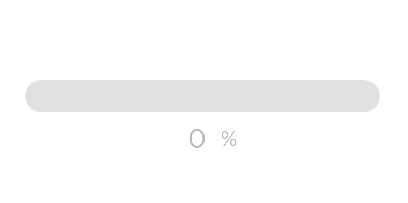

What is Feedback?
"the signal the machine returns to the user as the result of a user action"
"Feedback can be visual (highlighting a selected object), auditory (the clicking sound of a mouse button), haptic (the vibration of a game controller) or verbal ("Windows is shutting down")."
Inventing the Medium : Janet Murray
Loading Feedback

Feedback in digital tools
"Offer informative feedback. For every user action, there should be an interface feedback. For frequent and minor actions, the response can be modest, whereas for infrequent and major actions, the response should be more substantial."
Designing the User Interface : Ben Shneiderman et al.
Custom Feedback Demos
note: non-responsive, you need to refresh after resizing window (including opening dev tools)